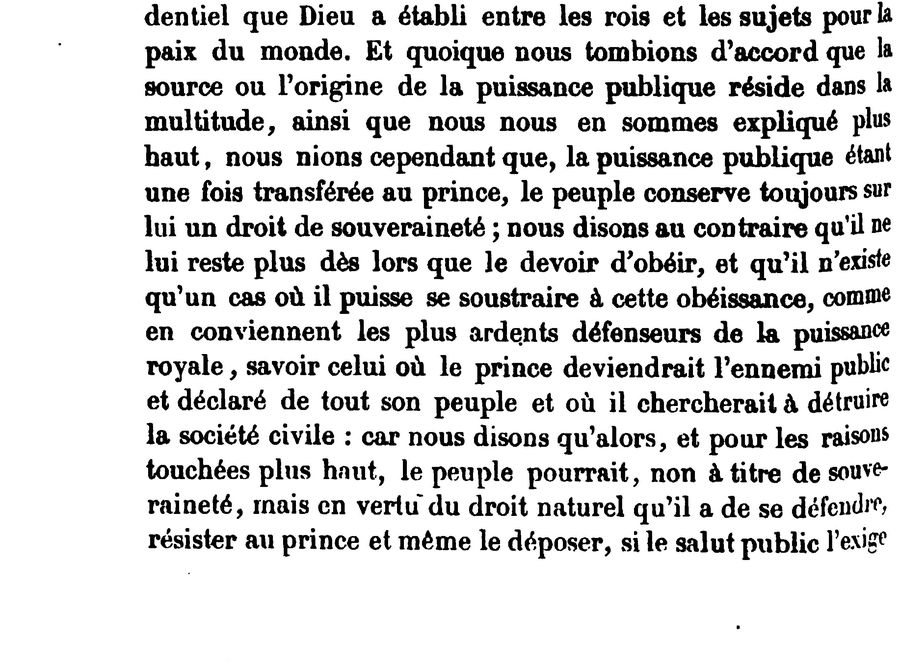
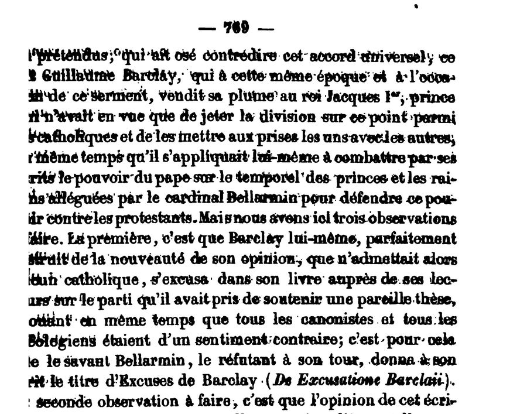

“Il ne lui reste plus dès lors que le devoir d’obéir” (tome I, p. 84)
French: tome I, p. 84, scan. Bianchi is answering the Protestant Réponse à l’Avis aux réfugiés. Highlighted: Lecky’s quotation.

5. But as this is not the place to prove the truth of the first of these two doctrines, it will be enough for us to show the falsity of the second, which, by subjecting princes to the power of the people and giving the people the right to depose them when they are bad, is directly contrary to holy Scripture, which teaches us that we must obey our sovereigns, however impious and wicked they may be … And although we agree that the source or origin of public power lies in the multitude, as we explained above, we deny nevertheless that, once public power has been transferred to the prince, the people still keep a right of sovereignty over him; we say on the contrary that from then on nothing is left to them but the duty to obey, and that there is only one case in which they may withdraw from this obedience, as the most ardent defenders of royal power agree: namely, when the prince should become the public and declared enemy of all his people and should seek to destroy civil society: for we say that then, for the reasons touched on above, the people could, not by right of sovereignty but by the natural right they have to defend themselves, resist the prince and even depose him, if the public safety requires it …
Original French
5. Mais comme ce n’est pas ici le moment de prouver la vérité de la première de ces deux doctrines, il nous suffira de faire voir la fausseté de la seconde, qui, en soumettant les princes au pouvoir du peuple et en attribuant à celui-ci le droit de les déposer quand ils sont mauvais, est directement contraire à la sainte Écriture, qui nous enseigne que nous devons obéir à nos souverains, quelle que soit leur impiété et leur scélératesse … Et quoique nous tombions d’accord que la source ou l’origine de la puissance publique réside dans la multitude, ainsi que nous nous en sommes expliqué plus haut, nous nions cependant que, la puissance publique étant une fois transférée au prince, le peuple conserve toujours sur lui un droit de souveraineté; nous disons au contraire qu’il ne lui reste plus dès lors que le devoir d’obéir, et qu’il n’existe qu’un cas où il puisse se soustraire à cette obéissance, comme en conviennent les plus ardents défenseurs de la puissance royale, savoir celui où le prince deviendrait l’ennemi public et déclaré de tout son peuple et où il chercherait à détruire la société civile: car nous disons qu’alors, et pour les raisons touchées plus haut, le peuple pourrait, non à titre de souveraineté, mais en vertu du droit naturel qu’il a de se défendre, résister au prince et même le déposer, si le salut public l’exige …
| Lecky (ch. V, note 131; read on his p. 237 = n252) | Bianchi, tome I, p. 84 |
|---|---|
| Quoique nous tombions d’accord | Et quoique nous tombions d’accord |
| (omits) | ainsi que nous nous en sommes expliqué plus haut, |
| transferée | transférée |
| souvraineté | souveraineté |
| ennemi public et déclaré de tout son peuple, et où | ennemi public et déclaré de tout son peuple et où |
| (stops at “la société civile”) | car nous disons qu’alors … le peuple pourrait … résister au prince et même le déposer, si le salut public l’exige |
“Vendit sa plume au roi Jacques Ier”: William Barclay (tome II, pp. 768–769)
French: tome II, pp. 768–769, scans n778–n779, defending Paul V’s brief against the English Oath of Allegiance of 1606. Highlighted: what Lecky reports.

8. But to justify the brief of Paul V it should be observed that at that time no Catholic disputed that the Pope had power over the temporal goods of princes for the cause of religion … the whole Catholic world was perfectly agreed on this last point, which was considered the common doctrine of the Catholic Church, approved by general councils. The first of the Catholics, true or so-called, who dared contradict this universal agreement was William Barclay, who at that very time, on the occasion of this oath, sold his pen to King James I, a prince whose only aim was to sow division on this point among the Catholics and set them against one another, while he himself was busy attacking in his writings the Pope’s power over the temporal goods of princes and the reasons Cardinal Bellarmine had put forward to defend that power against the Protestants. But we have three observations to make here. The first is that Barclay himself, well aware of the novelty of his opinion, which no Catholic then admitted, apologises in his book to his readers for having chosen to maintain such a thesis, admitting at the same time that all the canonists and all the theologians held the contrary view; and that is why the learned Bellarmine, refuting him in turn, gave his work the title The Excuses of Barclay. … The third observation is that this same Barclay, not daring to publish his book in his lifetime, it appeared only after his death, through a person who dared not give his name … But bolder than William Barclay was John Barclay, his son, who, on the pretext of avenging his father’s memory but meaning to pay court to King James I …
Original French
8. Mais pour justifier le bref de Paul V il convient d’observer qu’à cette époque aucun catholique ne contestait que le pape eût pouvoir sur le temporel des princes pour cause de religion … tout l’univers catholique était parfaitement d’accord sur ce dernier point, que l’on considérait comme la doctrine commune de l’Église catholique, approuvée par des conciles généraux. Le premier des catholiques, vrais [ou] prétendus, qui ait osé contredire cet accord universel, ce [fut] Guillaume Barclay, qui à cette même époque et à l’occa[sion] de ce serment, vendit sa plume au roi Jacques Ier, prince [qui] n’avait en vue que de jeter la division sur ce point parmi [les] catholiques et de les mettre aux prises les uns avec les autres, [en] même temps qu’il s’appliquait lui-même à combattre par ses [écr]its le pouvoir du pape sur le temporel des princes et les rai[sons] alléguées par le cardinal Bellarmin pour défendre ce pou[voir] contre les protestants. Mais nous avons ici trois observations [à] faire. La première, c’est que Barclay lui-même, parfaitement [in]struit de la nouveauté de son opinion, que n’admettait alors [auc]un catholique, s’excuse dans son livre auprès de ses lec[teurs] sur le parti qu’il avait pris de soutenir une pareille thèse, [av]ouant en même temps que tous les canonistes et tous les [thé]ologiens étaient d’un sentiment contraire; c’est pour cela [que] le savant Bellarmin, le réfutant à son tour, donna à son [écr]it le titre d’Excuses de Barclay (De Excusatione Barclaii). … La troisième observation, c’est que ce même Barclay n’osant pas publier son [liv]re de son vivant, ce ne fut qu’après sa mort que son livre [par]ut, par les soins d’une personne qui n’osa pas se nommer … Mais plus hardi que Guillaume Barclay fut Jean Bar[cla]y, son fils, qui, sous prétexte de venger la mémoire de son [pè]re, mais avec le dessein de faire sa cour au roi Jacques Ier …
John Barclay, the son, is the author of the Latin romance Argenis, as Lecky says. William Barclay (1546–1608) was born in Aberdeenshire; Lecky’s “an Englishman” is a slip.
Backlinks
Every place in Rationalism in Europe that links to this page (generated automatically when the site is built).